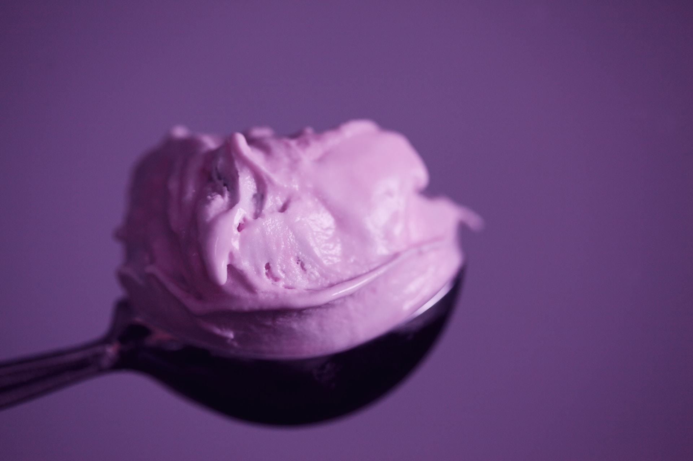

Raspberry Ice Cream

Raspberry Ice Cream
This home made raspberry ice cream is delightful, super fruity, and perfect for summer.
Ingredients
- 3 large egg yolks
- 1 1/2 cups heavy whipping cream, divided
- 1/2 cup sugar
- 2 cups raspberries
- 2 tablespoons sugar
- 2 drops vanilla extract
- 1 pinch salt
Steps
- Whisk egg yolks briefly in a small bowl. Heat 3/4 cup cream and 1/2 cup sugar in a heavy-bottomed pot over medium heat, until sugar dissolves and cream is hot. Whisk a little of the hot cream into the egg yolks to temper. Then whisk warm yolk mixture into hot cream and cook, stirring constantly, until mixture thickens enough to coat the back of a spoon. Do not let mixture boil. Remove from heat and quickly strain through a sieve into a bowl.
- Whisk in remaining 3/4 cup cream, cover mixture, and chill in the refrigerator.
- Puree raspberries in a food processor, and pass the puree through a fine-mesh sieve to remove the seeds. Stir in 2 tablespoons sugar until sugar has dissolved. Add raspberry puree to the cold cream mixture. Stir in vanilla extract and salt. Chill in the refrigerator until mixture is cold, about 30 minutes.
- Pour mixture into an ice cream maker and freeze according to manufacturer’s instructions, about 20 minutes. Transfer to an airtight container and freeze until firm, about 4 hours
Recipe & Image Sources